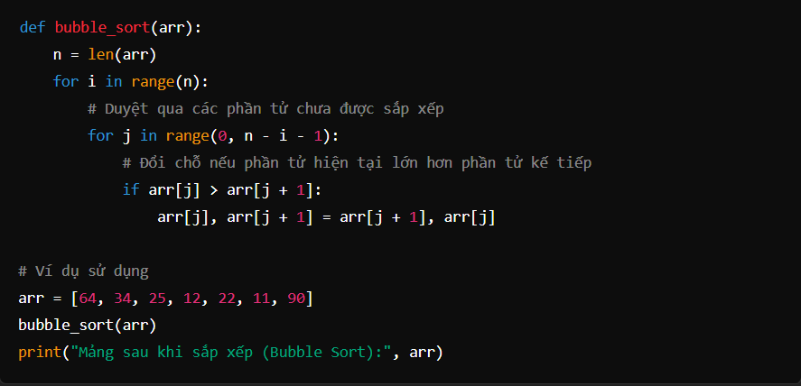
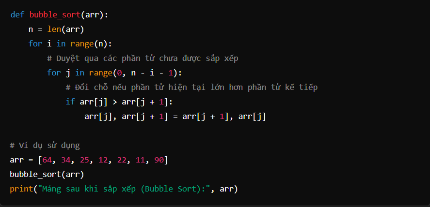
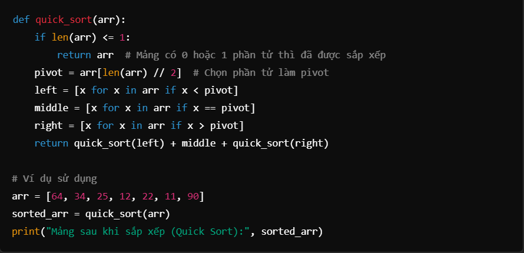
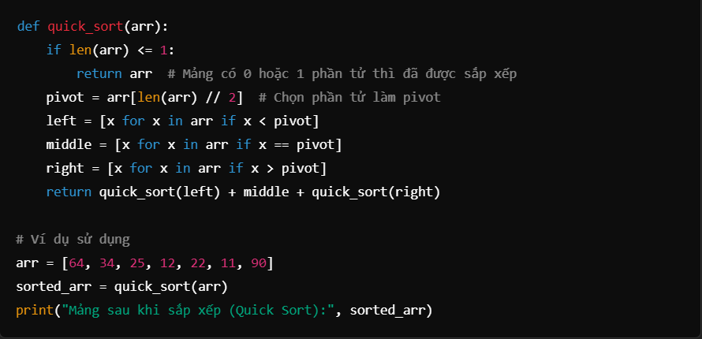
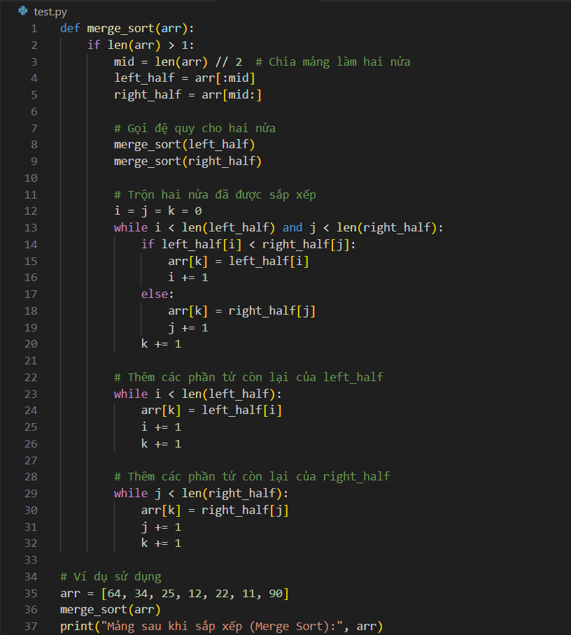
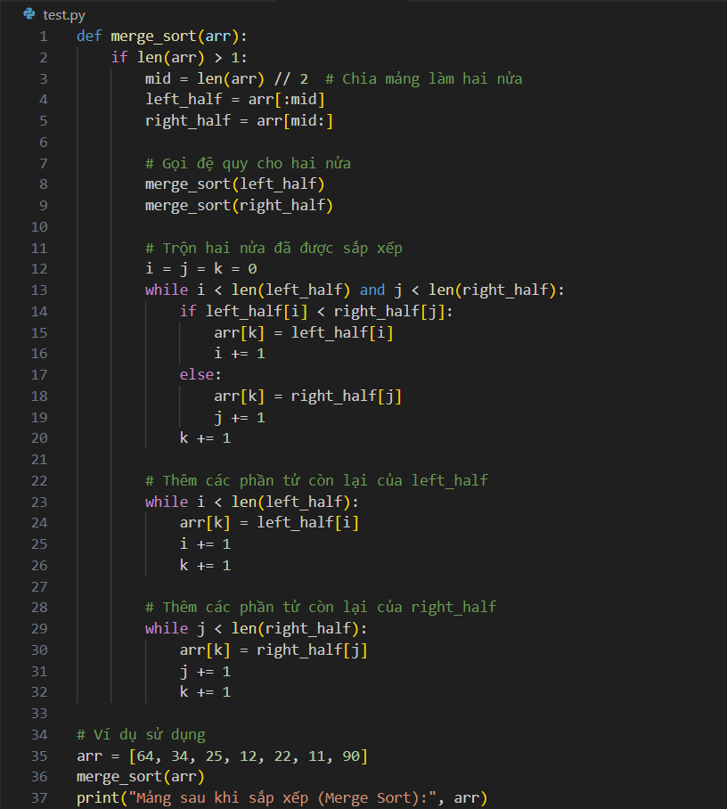

SORTING ALGORITHMS
Writer: Arya
INTRODUCTION
Sorting algorithms are a group of algorithms that help arrange a set of elements in ascending or descending order based on specific criteria. This is a fundamental problem in programming, playing an important role in data management and optimization, widely applied in data search, analysis, and processing. Today, I would like to share you about some Sorting algorithms
BUBBLE SORT
Bubble Sort is an basic Sorting algorithms. Its operation involves comparing and swapping the positions of two adjacent elements in the array if they are not in the desired order (ascending or descending). This process is repeated until the array is sorted.
Operating principle:
Initialize the outer loop: Iterate through the entire array from start to finish.
Inner loop: Compare each pair of adjacent elements.
If the preceding element is greater than the following element (in ascending order), swap the positions of the two elements.
Continue comparing and swapping until the end of the array.
Gradually reduce the comparison range: After each iteration, the largest (or smallest) element will "float" to the last position, so the elements at the end do not need to be checked again in the next iteration.
End: When there are no more swaps in an iteration, the array is sorted.
 

QUICK SORT
Quick Sort is a sorting algorithm based on the divide and conquer method. (divide and conquer). The algorithm works by dividing the initial array into smaller parts based on an element called the pivot and sorting those smaller parts.
Operating principle:
- Choose pivot: Select an element as the pivot (pivot). This element can be chosen randomly, as the first, last, or middle element of the array.
- Partition:
Rearrange the array so that elements smaller than the pivot are on the left and elements larger than the pivot are on the right.
The pivot will be in its correct position in the sorted array.
- Recursion: Apply the above process to the two halves of the array (to the left and right of the pivot).
- End: When the subarrays contain only one element or no elements, the sorting process is complete.
 

MERGE SORT
Merge Sort is a sorting algorithm based on the divide and conquer method. (divide and conquer). This algorithm divides the array into smaller parts, sorts each part, and finally merges the sorted parts to create the resulting array.
Operating principle:
- Divide the array: Divide the initial array into two equal halves until each half contains only one element (an array with one element is considered sorted).
- Sort and merge: Merge two sorted subarrays by comparing each element and placing them into the result array in the correct order.
 

CONCLUSIONS
When programming, you only need to know how to implement a sorting algorithm or just know how to call a function. However, different sorting algorithms provide us with many good and unique ideas - this is extremely useful when you are learning other algorithms.